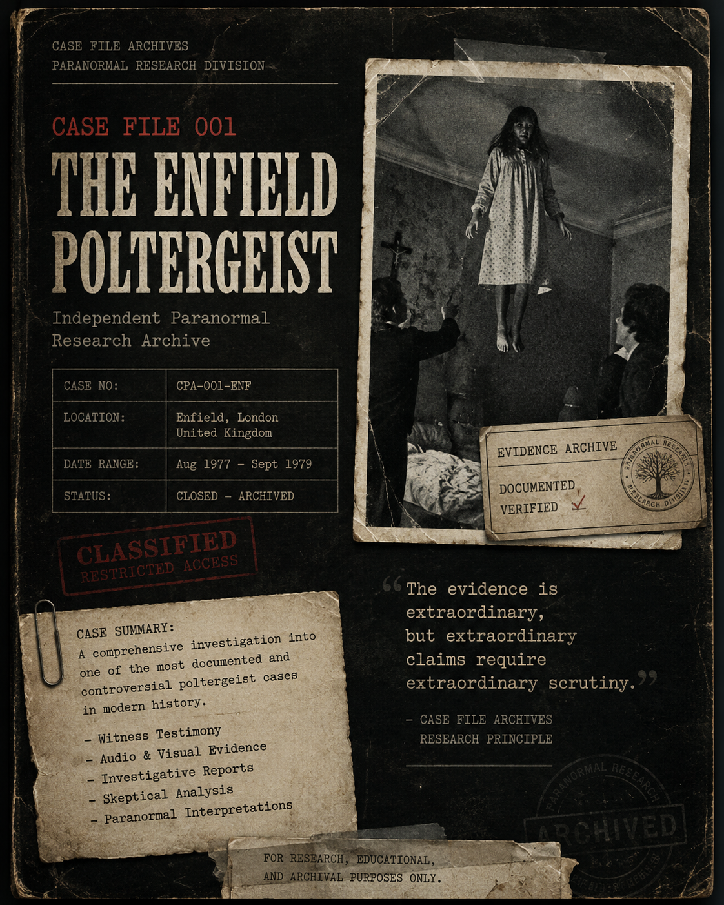

The Enfield Poltergeist

The Enfield Poltergeist is one of the most documented paranormal cases in modern history. The events reportedly occurred between 1977 and 1979 in Enfield, London, involving unusual noises, moving objects, witness testimony, and extensive media coverage.
Enfield, North London, England
1977–1979
Documentation Complete
This archive presents both paranormal interpretations and skeptical explanations. The purpose is to document reported events and available evidence while encouraging critical examination of all claims.